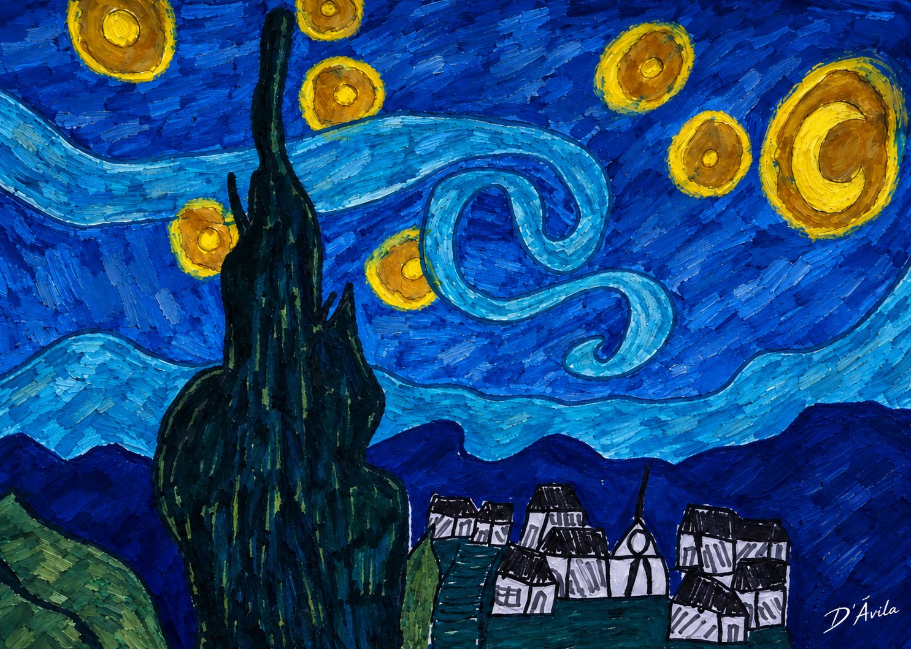
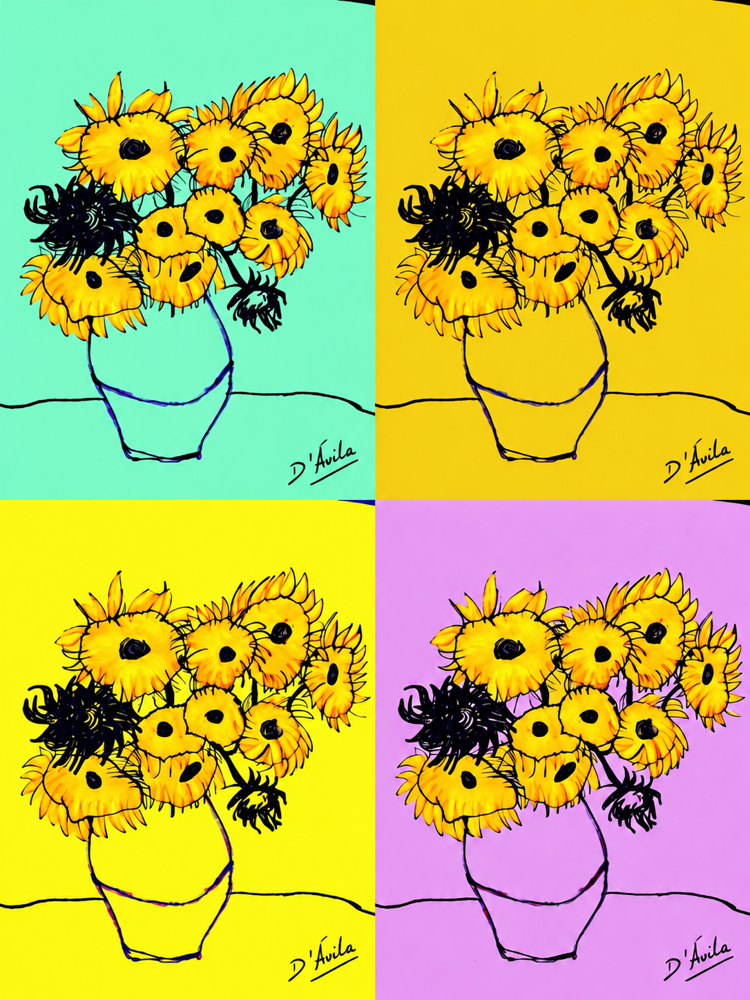
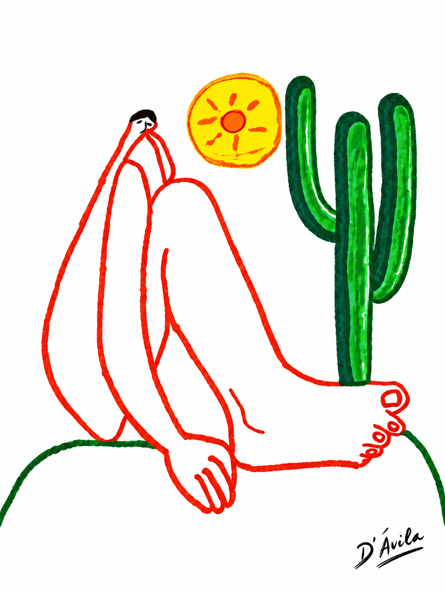

Danielle D'Ávila
Um espaço dedicado à literatura, poesia, narrativa e pensamento filosófico.
Nome de perfil: Dans D'Ávila
Entre palavras, ideias e sentimentos, a escrita transforma a experiência em obra.
📖 Livros e Projetos Literários
O meu amor é negro
Livro literário de Danielle D’Ávila, atualmente em desenvolvimento. A obra parte da experiência do amor, da negritude, da família e da identidade.
Frida
Projeto literário futuro de Danielle D’Ávila.
📚 Contos e Narrativas
Contos e narrativas de Danielle D’Ávila, reunidos em uma seção própria.
Segredos de Uma Família Comum
Autoria: Danielle D’Ávila.
Ato 1 – A Felicidade Vazia
1. A mãe perfeita – A história começa apresentando a mãe: sempre sorridente, alegre, parece ter uma vida ideal.
Maria da Felicidade, era uma mãe perfeita, cabelo feito e bem preso, brinco de pérola e colar, pulseira, tudo uma joia, inclusive sua roupa, devidamente passada e arrumada.
Uma mulher branca e alta, não desmerecer seus 1,65, nem a sua palidez, mas ela aparentava ser mais jovem do que uma idosa de seus 65 anos.
Parece que ela venceu na vida, tinha saúde, fartura e felicidade, era como se ela vivera um romance de um livro.
Altamente esperta, sabia ser feliz para espantar o mau olhado dos outros, sabia sorrir com força e vencer suas almejadas companhias.
Todos ao seu redor a viam como uma mulher feliz e realizada, não que fosse uma mãe exemplar ou uma esposa impecável mas ela gostava de aparentar ser mais do que é, ela acreditava que assim atrairia boas energias e positividade. Suas crenças eram de todo ao par com os couch que ensina a ser feliz o tempo todo, a dor é inimiga do prazer, e o amigo ou companhia são bons quando vibram alto, sentem completamente bem, e ela agia assim, conforme com a filosofia da felicidade, e os demais que lutem, pois ela já se sentia vitoriosa.
2. Os filhos e sua tristeza – Cada filho tem um motivo para não ser feliz: dificuldades financeiras, relacionamentos fracassados, problemas de saúde ou crises existenciais.
Viúva, Maria da Felicidade, teve com o seu cônjuge 7 filhos, iremos contar a história de cada um deles. E depois disso falarei do cônjuge e falecido pai de família, Clodoaldo Pontes Pinto.
1 Alvaro
O primogênito, primeiro filho, que deu à sua mãe a honra de ter o primeiro filho homem, chamado Alvaro, ele cresceu orgulhoso de si mesmo, além de ser o primeiro e homem a fazer-lhe suas honras ao seu pai que queria um filho homem, naquela época isso era bem comum, ele era prestigioso e próspero desde pequeno.
Na escola estudava mais que os demais de sua sala, era alto 1,80 de altura, branco dos olhos claros, o sonho não só de toda mãe dele, mas também de toda menina, Alvaro era muito forte e inteligente, ele tinha consciência do que era, por isso, escolhia criteriosamente a sua futura esposa. Passou na Universidade pública, fez a faculdade de direito, sendo em sua formatura o orador da turma, sua mãe já sabia que ele ocuparia o lugar de destaque, mas Alvaro tinha sua dor, o seu pai à quem ele devia toda a sua honra e glória, não estava presente em sua formatura, o seu pai falecido desde os seus 12 anos, o sonho de Alvaro era ter o pai presente em todo o seu sucesso, com um futuro promissor, ele dedicou-se a um empreendimento, um escritório especializado na advocacia em inventários, seguindo sua vida com ética e profissionalismo, não era previsto na sua vida que algo de contrário ou ruim acontecesse.
Casou -se com Catarina, e teve três filhos, ninguém poderia imaginar que Alvaro tivesse algum sofrimento, sua esposa esbelta, linda, beleza sutil e refinada, era ainda mais admirada por ser dona do lar e cuidar de todos os detalhes na vida do marido e da criação dos filhos, deu a ele três filhos: o primeiro, o Rodolfo, a do meio, Cecília, e o caçula Rafael.
Em meio a felicidade, conforto, dinheiro e beleza, os filhos cresceram, o primeiro filho Rodolfo, carregava um segredo, seu pai não tolerava mais a espera de sua nora, e entendia que o filho seria como ele, seguiria seus passos, e escolheria uma esposa tão linda tanto quanto sua mãe, para Aldo o filho era motivo de grande felicidade, o rapaz era muito parecido com Álvaro e com o avô dele, alto, branco dos olhos claros, um futuro promissor a sua frente, só que ninguém imaginava que ele o primogênito de Alvaro, que daria sucessão a todos os seus negócios, e passaria adiante todo o legado do pai ao tão neto sonhado de Álvaro, este filho não queria viver como o pai dele quisesse ou esperasse, ele queria sair de sua cidade, viajar pelas Américas e Europa, e sobre o casamento, o rapaz escondia que era homossexual, e quando isto foi descoberto, Álvaro entrou em depressão.
2 Amélia
A segunda filha, e primeira filha mulher, Amélia era na aparência parecida com sua mãe, diferente de Aldo, ela não persistiu nos estudos, fazendo apenas ensino fundamental, pois preferiu se casar cedo e constituir uma família.
Seu marido trabalhava em um Porto, era fiscal, ela teve quatro filhos, sua vida sempre foi sacrificada, ela aos 30 anos, teve câncer, e o seu marido apontava sua doença com a sua personalidade, Amélia era reclamona, briguenta, e estressada, o cônjuge ficava pelo turno da manhã e da tarde no Porto, cuidando das cargas, e a noite ia pra casa noturna.
Antes dos 30 anos de Amélia, e do câncer, ela tinha essa mesma personalidade, mas era saudável, e trazia para o seu marido uma mulher instigante, determinada, sedutora, não levava desaforo pra casa, falava o que pensava e era muito verdadeira, por mais que ela fosse de pouca instrução, ela foi um dia uma mulher que sabia ser mulher, sua tia ensinou isso e ela achou que jamais esqueceria, mas o câncer de mama feriu a mulher que ela foi um dia.
Sem o apoio do marido, que não compreendeu seu estado, ela viverá em pessimismo profundo.
3 Antonio
Antonio era o terceiro filho, estudou até o ensino médio, não passou em nenhuma faculdade pública, foi trabalhar no armazém do seu amigo e logo virou sócio.
Sua esposa Ana, tinha dificuldades para engravidar, mas eles indo a igreja, e fazendo promessa pro Santo, ela lhe deu um único filho, que era bem magrinho e com uma fraca saúde.
O filho era pardo claro, Antonio não era tão branco quanto Álvaro e Amélia, e vivia uma condição de vida simples, mas nada lhe faltava.
Para a grande tristeza de António, seu único filho viveu bem na medida do possível até os 14 anos de idade, depois padeceu e ficou acamado.
Antonio sofre muito e não compreende por quê o filho dele vive nessa condição.
4 Alice
Era a quarta filha do casal, viverá a maior parte do tempo estudando e crescendo, se tornou professora e escritora.
Alice escrevia histórias, contos, poesias, tinha um noivo que era militar, ele morreu em combate, antes que eles pudessem viver uma história de amor.
Alice muito mal com a situação, pois sonhara com o noivo uma vida linda, não quis casar -se com outro rapaz, escolhera viver em luto, sozinha, morando com sua mãe Maria da Felicidade, se sentia infeliz pois ninguém sabia que antes do casamento ela perdera sua virgindade com o noivo, mas não engravidou dele, causando nela uma grande frustração.
5 Aluísio
Aluísio era o quinto filho, ele era desordenado, indomável, e inconstante.
Faltava desde pequeno aulas, para estar com o seu grupo de amigos, os quais sua mãe odiava, mas Aluísio não ouvia ninguém, e só fazia o que queria, entrou em uma poucas e boas, roubou joias de uma senhora, junto de seus amigos, com o intuito de fazer sua grande festa de aniversário de 18 anos, foi preso por 2 anos, saiu da cadeia e sem estudo e sem bom nome na praça, não conseguia emprego e nem lugar de destaque como almejava, Aluísio só queria tudo do bom e do melhor, mas sem fazer esforço, ele era esperto, aprendeu uns cálculos e se tornou com seu ímpeto de astuto, e apesar do roubo e de seu caráter mal formado, ele tinha uma aparência boa pinta, e era a paixão das mulheres da sua cidade, pelo seu jeito sedutor e galante com as mulheres.
Ele poderia crescer e ficar rico como era o seu sonho, mas os vícios das drogas faziam com que ele perdesse tudo o que ele conquistava, nada era estável na vida de Aluísio.
6 Aparecida
A sexta filha, Aparecida veio de uma promessa de sua mãe Maria da Felicidade, que ela sentiu muitas dores durante a gravidez, e pediu a santinha Aparecida que cuidasse dela e de sua filha e dissera-lhe que daria o nome da Santa à sua filha, assim nasceu Aparecida.
Aparecida cresceu e teve um destino que ninguém previa, ela não dava certo em nenhum relacionamento.
Ela sempre dizia que o problema não era ela, e de fato, não se sabe o tamanho azar ou falta de sorte que se têm.
Mesmo sem sorte no amor, ela levava um casamento á ferro e fogo, ela era íntegra, bonita, correta, enquanto seu marido era infiel, ele era politico, era conservador, mas não queria ter filhos com ela, e a noite seu paradeiro era na casa noturna com a sua assistente, sua amante.
7 Armando
O sétimo filho e o caçula, Armandinho, menino lindo, corajoso, aventureiro e cheio De vida, era o estimo do seu irmão mais velho, tratado por Álvaro como um filho, Armandinho só queria se formar, trabalhar e constituir uma família.
Armandinho era uma promessa de vida, até ele casar e descobrir que ele ou a esposa não conseguiam ter filhos, fizeram um teste médico, em São Paulo, onde a medicina tinha mais avanço, e descobriu que era ele que não podia ter filhos, tido como infértil, guardou isso em segredo, só confidenciou ao irmão Álvaro.
Se tornou um homem frio, seco e grosso com sua esposa.
Sua esposa o traiu, e engravidou de outro, ela alegou e justificou que foi um milagre, mas seu irmão Álvaro sabia que depois do diagnóstico e a relação esfriar, ela passou um tempo na casa de uma tia, e se envolveu com o primo. Sabendo de tudo isso, Álvaro convenceu o seu irmão a esconder a verdade e ter este filho como dele. E foi, o que foi feito. Ninguém acreditaria nesse milagre, ninguém sabia que ele não podia gerar filhos, por isto, ficou assim a história, Armando criando um filho que não era dele, e sabendo que o pai era outro, e vivendo sua angústia e frustração.
O Pai
Clodoaldo Pontes Pinto, era um homem de postura, alto, robusto, bonito e dos olhos claros, vivera sua vida em liberdade e em vontade de crescimento, até sua vida ser bruscamente interrompida, por sua morte.
Deixou uma viúva e sete filhos, por ser comprometido e perseverante, deixou-lhes um terreno grande e de bom ponto comercial, que mais tarde viria a ser a Pensão de sua esposa, na qual ela cuidara com todo zelo.
Todos os filhos se reuniram para morar no mesmo terreno que o pai deixou, parecia, que assim eles tinham a presença e a bênção do pai ali naquele lugar.
A história do pai é curta, foi passado pros filhos pela sua mãe, que era o homem, pai, filho e marido perfeito, que só veio e trouxe somente a Felicidade.
3. A primeira discussão – Um dos filhos Antônio, questiona a mãe: "Por que você é tão feliz se o mundo é tão cruel?"
A mãe responde: - Porque meu filho, Deus só dá a quem merece, só é feliz quem pode.
O filho: - Mãe coisas ruins acontecem, nós não precisamos nos mostrar bem o tempo todo para que tudo torne-se feliz, pois não há razões para dissimular..
A mae: - Está me chamando de dissimulada?
O filho: - Não foi isso que eu quis dizer.
Falou a mãe: Pois eu vou te dizer a verdade, é melhor ser feliz do que triste!
A mãe não entende a tristeza – Para ela, ser feliz é uma escolha. Mas os filhos discordam: "A felicidade precisa de um motivo."
A mãe disse: - Se a felicidade precisa de motivos, que comece com o meu sorriso, meu ânimo e minha alta estima, pois me chamo Maria da Felicidade.
Na vida não há motivos pra não ser feliz, assim que pensa sua mãe.
Para Maria a felicidade já começava com o seu segundo nome, era importante pra ela mostrar que só não é feliz quem não quer.
Maria elenca que têm todas as razões para ser feliz, tivera se casado com um homem íntegro e correto, bonito de aparência e estimado, seu marido faleceu cedo, aos 30 anos mas lhe deixou bens e fundos de garantia para que ela pudesse seguir adiante.
Maria não era a mãe sacrificada pelos filhos, a vida que seu falecido lhe deixou fez ela perceber que sua vida estava segura e confortável, deixando -a cheia de vaidade e orgulho, enquanto seus filhos ela deixou-lhes livres para seguir seus próprios caminhos e buscar sua riqueza e felicidade.
Maria sempre dizendo -lhes que a felicidade era a maior conquista de uma pessoa, seus filhos se depararam cheios de problemas, sofrimento, tristeza e infortúnio, mas ela ignorava tudo isso, e tomava a frente e explicava-lhes como se fosse uma coisa de fácil entendimento, que não importava as circunstâncias, nem os obstáculos, todo mundo pode ser feliz, e deve ser feliz.
Perdera seu marido cedo, e mesmo tendo lamentado no início, ela dissera-lhes que ouviu de sua tia Gertrudes: - Pobrezinha! Ficou viúva cedo.
Maria se sentiu ofendida não por perder o marido cedo, mas sim, porque foi motivo de dar pena, e ninguém merece ser motivo de pena de nada e de ninguém.
Indignou-se e respondeu a sua tia: - A minha vida não acabou, hei de ser muito feliz!
Sua tia: - Vai se casar de novo?
Maria respondeu: - Preciso me casar novamente para ser feliz?
Gertrudes: - Creio que não, já que Clodoaldo lhe deixou grande fortuna!
Maria dissera: - Pois bem, não se vende pena, como também não se compra felicidade!
Foi assim que Maria da Felicidade compreendera-lhe que a sua felicidade era o seu maior bem.
Parecia positivo pra ela, mas envolve conflitos entre seus filhos, por pensarem que a matriarca tinha uma felicidade sem base sólida e frágil. E ninguém sabe o dia de amanhã, pois a verdade pode destruir ilusões. Principalmente a ilusão dela de ser feliz. Mas, a tristeza tem razões reais, enquanto a felicidade precisa ser sustentada por algo verdadeiro.
A vida é uma mentira, algo cheio de ilusão? Ou poderemos ser felizes mesmo com razões para deixarmos? E fica a pergunta: Maria da Felicidade era feliz?
4. O passado nunca comentado – Os filhos percebem que a mãe quase nunca fala sobre o pai falecido.
A filha Aparecida dialoga com sua mãe.
A filha: - ô mãe, a filha lhe chama a atenção, a senhora nunca fala no pai.
A mãe: - E o que eu tenho que falar? Ele foi um bom homem, digno, correto, fiel.. e agora está no céu com os anjos e Deus pai.
A filha: - Mas como era quando ele estava vivo?
A mãe: - Ele era fiel a mim e a família dele, disto eu tenho certeza! E me deixou muitos bens.. então pra que lamentar? Se tudo ficou bem, não é mesmo?
A filha: - A filha consentiu com a cabeça, mas pensou, que não via felicidade na morte do pai dela, e nem muito menos ser feliz sem viver uma vida ao lado dele.
Passando uns dias, Álvaro volta do trabalho e sua irmã Aparecida pergunta-o se ele sabe algo do pai deles, Álvaro só comenta que era íntegro e admirável, explica-lhe que só viveu com ele até os seus 12 anos, e que o pai era amoroso, presente quando não estava cuidando dos negócios.
Ele contou que o pai viajava todo mês a negócio e ficava em torno de 15 dias fora, mas que tudo valeu a pena, pois sua mãe herdou grande fortuna.
5. O irmão do pai aparece – O tio Flodoaldo, irmão do pai, retorna depois de muitos anos e parece incomodado com a felicidade da mãe.
O tio Flodoaldo conversa com o seu sobrinho Aluísio.
Vendo a sua mãe envolvida na felicidade dela, me fez remeter à muitas questões sobre o que é ser feliz e viver uma felicidade.
Cabe-nos muitos pontos a abordarmos, para podermos sermos felizes de verdade, e se, um dia seremos, pois não temos certeza.
A incerteza da felicidade permeia uma vida inteira, a única certeza que carregamos é a morte, o fim de tudo, e o fim também da felicidade, ou o início dela.
Uma vez li em textos espiritualistas, que “A felicidade não é deste mundo”, mas o mundo vende uma felicidade e nós a consumimos de forma desregrada, e desmedida, confundimos a felicidade com os bens, dinheiro, prazer e outros vícios.
Precisamos compreender os pontos da felicidade, é melhor ser feliz compreendendo sua própria vida meu filho.
O sobrinho:
- Tio a conversa será longa, sinto que preciso ouvir, o que eu nunca ouvi, e ninguém me ensinou.
O tio:
- Teu pai morreu cedo, mas era cheio de realidade, já sua mãe é vazia, felicidade sem discernimento, sem reflexão, sem conhecimento, se resume a um vazio existencial, precisamos de conhecimento para nos preenchermos...
O tio concluiu:
- Necessitamos sabermos se quisermos um dia ou em outra realidade (seja física ou espiritual), sermos realmente felizes.
6. Primeira insinuação de um segredo – Durante um jantar, o tio Flodoaldo solta uma frase ambígua que deixa os filhos intrigados.
Quero propormos um brinde a felicidade, mas deveríamos brindar também a verdade. Aquela que devemos seguir se um dia quisermos ser felizes. Mas, sempre me eis a questão:
- “Ser feliz sem saber ou triste sabendo?”
Já bêbado o tio nem conseguiu terminar o que falava... quando Maria da Felicidade o interrompeu e disse: - que conversa mais cabreira, está querendo achar pêlos em ovos. A felicidade está pra quem quer, só querer que já se é feliz. Eu sou feliz, quem não é, é porque não quer. Tá ai pra todo mundo..
O tio: - quem é que pode ser feliz com isso no passado? você é uma infeliz Maria, vive do que não sabe e nem procura saber.. ou será que sabe? Olhou o tio desconfiado.
Maria: - você é que é um infeliz, bêbado enchendo o saco. Eu não tenho nada do que procurar, a não ser procurar a minha felicidade, que me dou todo dia, já que sou uma pessoa grata, e você é um ingrato vindo na minha casa para me afrontar. Se eu sei de algo, é que não vim pra morrer de fome e nem ficar de cara triste..
Maria já enraivecida pede ao seu filho mais velho para tirar o seu tio da mesa.
O tio: - eu vou porque eu quero, um dia ela ainda vai se perguntar se existe felicidade sem a verdade.
Todos ficaram desconfiados na mesa.
O sobrinho Armando se entorna ao tio Flodoaldo e diz:
O sobrinho: - Calma tio, você bebeu vinho demais.. mas ele preocupado, perguntou ao tio: - existe alguma coisa que minha mãe precisa saber?
O tio: - meu filho, falou o tio com um pouco da lucidez que restou do vinho. – ela sabe, só pode saber, a sua mãe finge não saber..
O sobrinho ficou espantado pois nunca soube de nada do passado da sua família.
Ato 2 – A Felicidade Ameaçada
7. A desconfiança cresce – Os filhos começam a especular: será que a felicidade da mãe é real ou apenas uma fachada? Será que ela esconde algo?
Amélia conversando com sua irmã Alice:
A irmã Amélia: - fiquei perplexa com as coisas que o nosso tio disse, ele ironizou a felicidade da mãe e ainda disse que ela sabe de algo e finge que não sabe, e eu desconfio da mãe...
A irmã mais abastada Alice:
- eu não desconfio irmã, se a mamãe soubesse seja lá o que for, ela não fingiria tanto..
A irmã Amélia: - realmente parece que ela não sabe, que foi maldade do tio, por quê se ela soubesse seria outra pessoa certo?
- como assim? a irmã Alice perguntou.
Se houve algo no passado que eu não tenho a mínima ideia, se fosse tido conhecimento disso, a nossa vida seria diferente.. foi o que me coube pensar..
A irmã Amélia: - diferente eu não sei, mas talvez nossa mãe não teria uma felicidade que nos faz sentirmos infelizes.
8. Conversas paralelas – Um dos filhos, o sobrinho primeiro Álvaro, conversa com o seu tio Flodoaldo, e percebe que ele sabe de algo importante.
O sobrinho: - Tio eu sei que você sabe de algo, mas não quer contar.. sobre a nossa família.
O tio: - meu filho, toda família têm seus segredos, eu estava bêbado e cometi uma insensatez, é melhor esquecermos isso...
O sobrinho: - Mas, o que me parece é que foi algo relevante, grave. Gostaria de saber...
O tio: - eu achei que a sua mãe sabia, mas não tinha certeza.. acho que foi por isso na mesa que me revoltei, a felicidade dela me aborrece, não sei como vocês aguentam... se eu falar mais, eu posso me arrepender, apesar de achar que contar é um bem... O tio terminou dizendo: - agora preciso-me ir, vou passar no banco.
O sobrinho se despediu e disse que gostaria de terminar a conversa quando for possível ao seu tio.
O tio acenou consentindo e seguiu em direção ao banco.
9. O passado revisitado – Os filhos Aluísio, Aparecida e Armando, tentam lembrar de momentos da infância e percebem que há lacunas na história do pai.
O filho Aluísio: - olhando esse selo vejo que nosso pai era importante, falou o filho cheio de orgulho.
A filha Aparecida: - ele era importante e bem apessoado, puxamos pra beleza dele, riu a irmã.
O outro filho Armando: - vocês só falam no dinheiro e na beleza do pai, falou o irmão contrariado.
A filha Aparecida: - a verdade é que eu não sei quase nada dele, só lembro que ele trabalhava muito...
O filho Aluísio interrompeu e completou: - e viajava muito também...
Deve ser por isso que tivemos pouca vivência ou conhecimento sobre ele.
O outro filho Armando: - eu preferiria um pai feio e pobre que vivesse sempre ao meu lado do que um pai rico e bonito que eu não conheci.
As emoções dos três irmãos se encontraram e se compadeceram um pelo outro, a ausência de um pai.
10. A mãe foge do assunto – Sempre que tentam falar sobre o pai, ela desconversa e muda de assunto.
A filha Aparecida tenta perguntar a sua mãe:
A filha: - mãe, fala mais sobre o meu pai?
A mãe: - o que tu quer saber? Ele não te deu tudo? Não deixou tudo?
A filha: - conversando com os meus irmãos eu compreendi que faz muita falta um pai nas nossas vidas.
A mãe: - ele cumpria o seu papel, não deixou faltar nada, agiu como um homem de bem que cumpriu com suas obrigações e sou feliz por ter me casado com ele e ter tudo o que eu tenho, falou a mãe com ar de orgulho e envaidecimento.
A filha: - mas mãe ele sempre estava trabalhando e viajando?
A mãe: - tá tudo aí, olha essa casa, olha a sua vida e a vida de seus irmãos, você acha pouco?
A filha querendo chorar: - não foi isso que eu quis dizer...
A mãe: - já vai chorar? Já vai desenterrar defunto? Já vai pro velório?
É por isso que eu sempre falo, vai ser feliz, vai falar de coisa boa, vai ser positiva e ver apenas o lado bom das coisas, tudo quer se lastimar, tudo reclama... falou a mãe aborrecida.
A filha: - já mudou o assunto? Pois bem, me retiro, não vou estragar a sua felicidade e nem a sua paz, com você não dá pra conversar, falou a filha indignada, e se retirou.
11. A verdade se aproxima – O tio Flodoaldo, decide contar a um dos filhos o seu sobrinho Antônio, o segredo sobre o pai.
O tio: - Meu sobrinho é errado quem conta ou quem faz?
O sobrinho: - Depende do que houve. Tem quem aumente e tem quem esconda.
O tio: - A verdade é uma só, mas eu acho que a verdade tem dois lados.
O sobrinho: - os lados da verdade estão em duas faces?
O tio: - possivelmente sim, já que a duas faces na mesma moeda, a cara e a coroa. Ambas possuem o mesmo valor, então, por isto vou lhe contar a verdade por de trás da vida dos seus pais.
O sobrinho ficou de prontidão para ouvir o seu tio dizer algo que ele não sabe se alivia ou aflige o seu ser.
O tio: - seu pai tem outra família...
O sobrinho se assustou e deu um impulso de ir para trás e só estava em seu pensamento na sua mãe, e lhe perguntou ao tio: - minha mãe sabe disso?
O tio: - eu não sabia, achava que sua mãe fingia, mas ela realmente não sabe de nada pelas minhas análises sua mãe ia morrer sem saber.
O sobrinho: - meu pai eterno... por que isso?
Se estalou na pergunta o por quê do pai um homem tão íntegro e correto ter uma outra família e enganar todo mundo como se fosse um canalha que não presta, quando ele lhe lembrava de um pai tão amoroso e atencioso.
E ele pergunta à Deus: - O que será que vai ser de minha mãe?
12. O grande segredo – O pai, que a mãe descrevia como um homem bom e amoroso, na verdade escondia algo sombrio, uma traição, tinha outra família e mentia para todos que lhe queriam bem, mas diz o tio que a outra esposa sabia, e não é só saber que ele traiu a confiança de sua esposa, e de sua família, ele também deixou uma dívida a um banco na capital, e a outra família estava buscando encontrar a família de Maria da Felicidade, para exigir-lhe seus bens de direitos.
O filho chocado com tudo isso disse que iria confrontar a mãe, pois ele duvidava se sua mãe realmente não sabia, ou ela fingia pra não a descobrirem e reivindicarem o seu patrimônio herdado de seu pai.
13. O filho Antônio confronta a mãe – Ele pergunta diretamente a ela sobre o passado do pai.
O filho: - Mãe, qual o passado do pai?
Mãe: - que passado? Está falando sobre quem ele era ou como vivia?
O filho: - Não mãe, eu quero saber o que meu pai fez no passado que poderia causar vergonha.
A mãe: - Lhe garanto meu filho que seu pai era um homem honesto. Tudo que disserem dele é pura mentira. Não acredite nas más línguas.
O filho: - então ele fez e a senhora não sabe?
A mãe: - não é o que eu não sei, se ele tivesse feito eu saberia.
O filho saiu de perto da mãe irritado e aborrecido, dizendo a si mesmo que não adiantava conversar com sua mãe, ele teria que reportar o que o seu tio lhe contou aos seus irmãos.
- O que será que os meus irmãos acharam disso?
14. A primeira rachadura na felicidade –
Logo depois da conversa com o filho sobre seu falecido marido, a mãe, pela primeira vez, não responde com um sorriso.
E se sente deveras penalizada. Não sabia da vida do marido, ele não deixou faltar nada, mas também não era um marido fiel e presente, ela apenas escutava rumores, e procurava não saber do que realmente acontecia, se resguardava casulo, e dizia que o que os olhos não vê o coração não sente, que era melhor viver sem saber, assim protegia a si e a sua felicidade.
15. Os outros filhos descobrem a verdade – O tio finalmente revela tudo para todos.
O tio: - eu somente revelei tudo pois, a outra família está procurando a de vocês para protestar os bens que eles têm direitos por serem também a família dele.
16. O choque e a negação – A mãe se recusa a aceitar,
A mãe: - É MENTIRAAA! Ela entra em choque e precisa ser levada ao hospital.
Saiu da casa desmaiada.
Levaram-na ao hospital, ela fez exames e tomou medicamentos em prol de sua saúde e melhoria.
Enquanto isso os filhos permanecem aflitos.
17. O colapso emocional –
Os filhos entram no quarto do hospital para verem sua mãe e a mãe começa a mudar: já não sorri tanto, sua energia parece desaparecer.
Sua filha Aparecida diz: - mamãe nunca te vi assim tão triste e abatida.
A mãe fica em silêncio.
18. O vazio da felicidade falsa – Ela percebe que sua alegria era construída sobre uma ilusão.
A mãe entra em devaneio e começa a pensar nas suas memórias do passado, e começa a chorar inconsoladamente.
19. Os filhos veem a mudança – Agora, são os filhos que tentam confortá-la, mas sem sucesso.
Todos os filhos penalizados pela sua mãe.
Ela nunca houvera de ser tão infeliz, a coitada esta adoecendo por saber a verdade, disse-lhe o tio.
O tio: - se a mãe de vocês partirem vocês que vão responder os bens que a segunda família reivindica.
Ato 3 – A Queda e o Fim
20. O peso da verdade – A mãe entra em depressão profunda. Sua visão de mundo se desfaz.
A mãe:
- Meu mundo caiu, agora eu enxergo a verdade.
As verdades ninguém diz, ninguém ensina, e hoje eu sei que ninguém aprende.
Neste mundo que vivemos, só encontramos as lições que a escola da vida oferece, se vamos aprender ou não, só saberemos no final.
E chegou o meu final, e também a minha verdade...
A mãe:
- Meus filhos, a verdade é que:
“A felicidade não existe!”
“Quem se diz feliz, só é porque não sabe!”
“Vivi para buscar a felicidade e nunca tê-la de verdade!”
“Nunca serei feliz, nem aqui e nem lugar nenhum!”
“Ninguém é feliz!”
Ao falar todas essas frases esbaforidas e lastimosas, a Maria se cala com um nó na garganta, sente uma porrada em seu peito, tentar falar mais alguma palavra que ninguém conseguiu ouvir e fecha os olhos para nunca mais acordar.
21. A morte da felicidade – A mãe morre demostrando que sua felicidade nunca teve base real, e que a infelicidade que ela tanto fugia veio de forma mortal.
O médico:
- Lamento informar aos senhores o falecimento da senhora Maria da Felicidade.
O motivo da morte de Maria da Felicidade: Morreu de Tristeza.
Dizem que a verdade dói e até mata, e que é a mentira que nos faz viver.
Uma mentira contada várias vezes pode se tornar uma verdade.
Quem acredita na mentira, não acredita na verdade.
Cabe a nós decidir nosso caminho.
23.A reflexão final – Os filhos compreendem que a felicidade precisa de fundamentos verdadeiros. O final da vida de sua mãe, fizeram-lhes entender a ter uma visão mais realista da vida: a felicidade só pode existir onde há razões concretas para isso.
Os filhos na missa de sétimo dia da mãe disseram-lhe que a mãe deles enfim encontrou a eterna felicidade, e que eles encontraram apenas a verdade sobre suas vidas.
Um de seus filhos, o Álvaro, deu suas palavras finais:
- A felicidade é uma ilusão que a vida proporciona para caber no nosso desejo, quem deseja ter ou ser feliz na vida, é preciso abdicar da verdade.
Quando chegamos a verdade, ela não destrói uma vida, ela destrói a ilusão de uma vida inteira.
Mamãe morreu por descobrir a verdade de sua própria vida.
Mal sabia ela que pode-se construir uma vida de base sólida através da verdade e de uma realidade concreta.
A partir disso, decidimos-lhe viver uma verdade duradoura, pois, não se tem nada, somente a verdade.
E é a única coisa que levamos daqui.
Seguindo nosso exemplo, espero que você mamãe:
- Vá em paz, e que a verdade lhe faça feliz!
.
✒️ Poemas — Danielle D'Ávila
📖 Ler a Obra Poética completa →
Obra Predileta
Cansei-me dos livros.
Envolvi-me em uma obra viva,
Na qual leio somente a ti.
Pois o motivo e a vontade
Escreveram-se definidos,
Como em uma mensagem de amor.
A primeira vez que eu o vi
A primeira vez que eu o vi,
Foi como o inesperado,
O amor à primeira vista,
Existe enfim.
14/10/23
Por todas as vezes que eu te amei,
Te vi em todas as aparições vistas
Pelo meu coração.
É como se eu enxergasse pela janela
Da tua alma,
E a achasse em um lugar seguro,
Que abriga o imortal e o perfeito
Do teu ser feito de amor,
Para a minha alma
Feita de amar-te.
14/10/23
Tua face única,
Inesquecível,
Vista pelo
Belo
De meu
Coração.
14/10/2023
O quanto fala claro
O quanto
fala claro
Dentro de mim
O que
sinto,
Com todo o sentido
O muito
De meu
Coração.
D IÁvila / D’Ávila. 03/12/2023.
Sonharia
Eu poderia
Como também deveria,
Mas eu queria
E desejaria
Que tudo isto
Que eu faria, haveria
Em algum lugar,
Onde existiria O tanto
Que eu te amaria.
D’Ávila. 01/02/2024.
A realidade que vem
É aquela que eu sonhei
E o amor leva
À existir
Por todo canto
Que eu te amei.
D’Ávila. 01/02/2024.
Quando estamos juntos
Quando estamos juntos,
Nós realizamos
Os nossos
Recíprocos sonhos,
Principalmente aquele
Que mais amamos:
O nosso amor.
D’Ávila. 01/02/2024.
Bela
Como és bela,
e pelas controvérsias,
não me falta reverências,
se és vista pelos olhos
de meu coração.
22/08/2024
Obra Poética de Danielle D’Ávila
Dedicação
Ao meu amor
Sentido,
Que me enche
As palavras,
E me dá sentido
À vida.
Esta seção reúne a obra poética enviada pela autora, preservando a ordem e a redação dos poemas disponíveis neste projeto.
📝 Textos e Obras
A Flor Negra
SELEÇÃO SARAU BRASIL 2022 — Página 123
De raízes negras
A flor desabrochou,
Em uma resistência
A menina luta.
A negra existe
Por coragem,
No deserto,
No jardim
Da vida.
Em todo lugar,
Até o concreto
Não interrompe
O seu crescimento.
Enxergamos
Suas profundezas
De flor,
Nada a impede
Que suas raízes
Subam ao céu.
Seu lugar de flor
É na negritude
Da alma.
O Deus a ama
Em sua cor púrpura,
Luz negra,
Encontra a certeza
De si
E de sua rara
Ancestralidade.
Esta é a
Flor Negra
Ou a negra da flor,
A flor da beleza
E da verdade.
Danielle D’Ávila — Manaus/AM
🧠 Escritos Filosóficos — Filosofia Antiga
Exemplos de filósofos gregos da Grécia Antiga, organizados em ordem cronológica aproximada, considerando principalmente o período de nascimento de cada pensador.
As imagens são representações artísticas ou históricas dos filósofos, pois não existem fotografias dos pensadores da Antiguidade.
1. Tales de Mileto
c. 624–546 a.C. · Mileto, atual Turquia
Escola/Tradição: Escola Jônica · Naturalismo
O filósofo pré-socrático viveu em Mileto, entre os séculos VII e VI a.C. Além de filósofo, foi cientista e político. Não existem livros de sua autoria preservados; seus pensamentos foram conhecidos por meio da tradição indireta. É considerado fundador da Escola Jônica e um dos primeiros pensadores da tradição grega, sendo tradicionalmente apresentado como iniciador da filosofia.
Ideia — Arché: A água como princípio originário: tudo nasce e vem da água. A água é apresentada como princípio primordial, origem e fundamento das coisas.
Logos: A razão que procura justificar o princípio originário; a água é fonte da vida.
Cosmologia: A passagem de explicações míticas para uma investigação racional sobre a origem do universo.
Ensinamento: O uso da razão como explicação do cosmos mudou a visão que os gregos tinham do mundo. A busca por um elemento essencial, como a água, conduz à reflexão sobre um princípio originário da natureza.
Principais interesses: Metafísica · Astronomia · Ética · Ciência · Matemática · Engenharia.
Referências: Giovanni Reale/Dario Antiseri, História da Filosofia — Antiguidade e Idade Média, Paulus, 1990; Wikipédia.
2. Anaximandro de Mileto
c. 610–546 a.C. · Mileto
Escola/Tradição: Escola de Mileto · Naturalismo · Jônicos · discípulo de Tales
Seguidor da Escola Jônica e discípulo de Tales, Anaximandro aprofundou a problemática do princípio originário.
Ideia — Cosmologia: Para Anaximandro, a água já é algo derivado. O princípio (arché) é o ápeiron, uma natureza infinita e indefinida da qual provêm todas as coisas que existem.
Ápeiron: Substância indeterminada e infinita que faz surgir todas as coisas, permitindo explicar o universo por meio de um único princípio ativo e eterno.
Ensinamento: O filósofo procurou um princípio capaz de explicar a origem do cosmos e solucionar a questão da natureza das coisas.
Referências: Giovanni Reale/Dario Antiseri, História da Filosofia — Antiguidade e Idade Média, Paulus, 1990; Wikipédia.
3. Anaxímenes de Mileto
c. 588–524 a.C. · Mileto
Escola/Tradição: Escola de Mileto · Naturalismo · discípulo de Anaximandro
O filósofo pré-socrático viveu no Período Arcaico, na segunda metade do século VI a.C. Na sua escola de pensamento, praticou o materialismo monista. Seu escrito Sobre a natureza é conhecido por fragmentos e testemunhos indiretos.
Cosmologia — princípio originário único: Para Anaxímenes, o princípio deve ser infinito, pensado como ar infinito, uma substância aérea ilimitada.
Ideia — Ar: O princípio de origem do universo vem do ar e as coisas surgem por meio da condensação e da rarefação.
Ensinamento: O princípio originário do ar leva à reflexão sobre sua importância para a vida humana.
Principais interesses: Metafísica · Matemática · Ética · Astronomia.
Referências: Giovanni Reale/Dario Antiseri, História da Filosofia — Antiguidade e Idade Média, Paulus, 1990; Wikipédia.
4. Pitágoras
c. 570–490 a.C. · Samos, Grécia
Escola/Tradição: Pitagóricos · fundador do Pitagorismo
Filósofo e matemático, Pitágoras viveu o apogeu de sua vida em torno de 530 a.C. e morreu no início do século V a.C. As informações biográficas foram escritas séculos depois de sua morte, havendo pouca informação confiável sobre sua vida. É possível que seu ensinamento tenha sido predominantemente oral.
Ideia — Os números: Os números definiam a natureza e a essência das coisas. Tudo teria uma definição numérica e formas geométricas.
Ensinamento: Os números representam a estrutura do universo; a matemática aparece como princípio de compreensão da ordem e da harmonia das coisas.
Principais interesses: Metafísica · Matemática · Música · Astronomia.
Referências: Giovanni Reale/Dario Antiseri, História da Filosofia — Antiguidade e Idade Média, Paulus, 1990; Wikipédia.
5. Xenófanes
c. 570–475 a.C. · Cólofon, Jônia
Tradição: Filósofo, poeta, sábio e pensador religioso; tradicionalmente associado à Escola de Eleia.
Foi adversário do antropomorfismo dos poetas e dedicou-se à reflexão sobre a unidade e a perfeição de Deus. De sua obra restaram versos.
Ideia — Crítica ao antropomorfismo: Xenófanes critica a representação dos deuses feita por Homero e Hesíodo, segundo a qual os deuses possuíam formas, paixões e defeitos semelhantes aos humanos.
Terra: No material fornecido, a terra aparece como princípio originário, pois os seres humanos e os seres vivos nascem da terra e a ela retornam.
Ensinamento: A reflexão sobre a natureza e sobre a divindade questiona as imagens humanas atribuídas aos deuses.
Referências: Giovanni Reale/Dario Antiseri, História da Filosofia — Antiguidade e Idade Média, Paulus, 1990; Wikipédia.
6. Heráclito de Éfeso
c. 540–470 a.C. · Éfeso
Escola/Tradição: Seguidor da Escola Jônica
Teoria: “Tudo flui” e “tudo se move”. Heráclito parte do dinamismo universal das coisas, que nascem, crescem e perecem.
Ideias: Tudo flui — o fluxo contínuo é comparado ao rio; tudo muda — nada permanece absolutamente estático; tudo se move — o movimento é processo contínuo.
Dialética dos opostos: Os contrários participam do movimento da realidade, como quente e frio, noite e dia.
Devir: Passagem e transformação entre os opostos.
Fogo: Elemento que representa e simboliza a transmutação.
Ensinamento: A mudança e o movimento são fundamentais para compreender a realidade; nós também estamos sempre mudando e nos transformando.
Principais interesses: Metafísica · Epistemologia · Ética · Política.
Referências: Giovanni Reale/Dario Antiseri, História da Filosofia — Antiguidade e Idade Média, Paulus, 1990; Wikipédia.
7. Parmênides de Eleia
c. 530–460 a.C. · Eleia
Escola/Tradição: Escola Eleática
Parmênides nasceu em Eleia na segunda metade do século VI a.C. e morreu em meados do século V a.C. Foi fundador da Escola Eleática. De seu poema Sobre a Natureza sobreviveram o prólogo, grande parte da primeira parte e fragmentos da segunda.
Ideia — Ser e não-ser: “O ser é e o não-ser não é”. O ser é apresentado como eterno, imutável e perfeito, enquanto o não-ser não pode ser pensado como aquilo que existe.
Verdade e aparência: Parmênides distingue a via da verdade da opinião (doxa), levando a reflexão filosófica da cosmologia para uma investigação sobre o ser.
Ensinamento: O ser é e permanece o mesmo; o não-ser não existe. Seu pensamento é tradicionalmente colocado em contraste com o de Heráclito.
Referências: Giovanni Reale/Dario Antiseri, História da Filosofia — Antiguidade e Idade Média, Paulus, 1990; Wikipédia.
8. Anaxágoras de Clazômenas
c. 500–428 a.C. · Clazômenas, Jônia
Escola/Tradição: Pluralista · pré-socrático
Anaxágoras viveu durante três décadas em Atenas e é tradicionalmente associado à introdução do pensamento filosófico nessa cidade. Deu prosseguimento à tentativa de resolver dificuldades suscitadas pela filosofia eleática. Escreveu um tratado Sobre a natureza, do qual sobreviveram fragmentos significativos.
Ideia — Nous: A mente cósmica (Nous) ordena todas as coisas. No material fornecido, o Nous é apresentado como uma força cósmica de origem divina que organiza o universo.
Ensinamento: A mente (Nous) é princípio ordenador do cosmos, introduzindo a ideia de uma inteligência que organiza a realidade.
Ideias notáveis: Nous como princípio ordenador; Via Láctea como concentração de estrelas distantes.
Referências: Giovanni Reale/Dario Antiseri, História da Filosofia — Antiguidade e Idade Média, Paulus, 1990; Wikipédia.
9. Empédocles
c. 495–430 a.C. · Sicília
Escola/Tradição: Pluralista
Empédocles combinou elementos sugeridos por Parmênides, Pitágoras e pelas escolas jônicas. Foi pensador científico e precursor da ciência física. Compôs Sobre a natureza e Carme Lustral, dos quais restaram fragmentos.
Teoria — Quatro elementos: Toda a matéria é feita de quatro elementos: água, terra, ar e fogo.
Amor e Discórdia: As forças motrizes que regem o universo são o Amor, que une os elementos, e a Discórdia/Ódio, que os separa.
Ensinamento: Os quatro elementos são apresentados como componentes primordiais da natureza e da diversidade natural do mundo.
Referências: Giovanni Reale/Dario Antiseri, História da Filosofia — Antiguidade e Idade Média, Paulus, 1990; Wikipédia.
10. Zenão de Eleia
c. 490–430 a.C. · Eleia
Influência: Parmênides de Eleia.
Zenão nasceu em Eleia entre o fim do século VI e o início do século V a.C. De seu livro chegaram fragmentos e testemunhos. É tradicionalmente associado à defesa da filosofia eleática por meio de argumentos paradoxais.
Teoria — Paradoxos de Zenão: Os paradoxos procuram mostrar dificuldades na concepção do movimento e da multiplicidade.
Paradoxo de Aquiles e da Tartaruga: se a tartaruga recebe vantagem inicial, quando Aquiles chega ao ponto onde ela estava, ela já terá avançado para outro ponto, produzindo uma divisão sucessiva do percurso.
Paradoxo da Flecha: o argumento problematiza o movimento ao considerar a posição da flecha em cada instante.
Ensinamento: Os paradoxos desafiam a compreensão comum do movimento e foram usados na defesa das teses eleáticas.
Referências: Giovanni Reale/Dario Antiseri, História da Filosofia — Antiguidade e Idade Média, Paulus, 1990; Wikipédia.
11. Demócrito
c. 460–370 a.C. · Abdera
Escola/Tradição: Atomista · Escola de Abdera
Demócrito viveu entre aproximadamente 460 e 370 a.C. É conhecido, juntamente com Leucipo, pela formulação antiga do atomismo.
Teoria — Natureza composta pelos átomos: Para os abderitas, o átomo é uma forma originária e indivisível. Os átomos diferenciam-se pela figura, ordem e posição.
Átomos, vazio e movimento: O átomo, pensado como “pleno” de ser, pressupõe o vazio. Átomos, vazio e movimento constituem a explicação da realidade no atomismo.
Ideia — Atomismo: Os átomos são partículas indivisíveis; as coisas surgem pela união e separação dos átomos.
Ensinamento: O atomismo contribuiu para a história da investigação da matéria e influenciou posteriormente o desenvolvimento das concepções científicas sobre a natureza.
Referências: Giovanni Reale/Dario Antiseri, História da Filosofia — Antiguidade e Idade Média, Paulus, 1990; Wikipédia.
12. Sócrates
470/469–399 a.C. · Atenas
Tradição: Filosofia socrática · diálogo e investigação ética.
Vida: Sócrates nasceu em Atenas por volta de 470/469 a.C. e morreu em 399 a.C., após ser condenado por impiedade e por corromper os jovens. Filho de um escultor e de uma parteira, não fundou uma escola formal. Ensinava em espaços públicos, como ginásios e praças, atraindo jovens e adultos.
Oralidade: Sócrates não deixou escritos. Seu pensamento foi transmitido por meio de diálogos e testemunhos de discípulos, sobretudo Platão, o que torna difícil separar em todos os casos o Sócrates histórico das doutrinas posteriormente apresentadas em seu nome.
Método socrático: A investigação ocorre por perguntas sucessivas. Em vez de simplesmente aceitar opiniões (doxa), o interlocutor é levado a examinar aquilo que pensa saber. A dialética é o diálogo orientado à busca da verdade (aletheia).
Maiêutica: O método é associado à ideia de “dar à luz” as ideias, em referência à profissão de sua mãe, que era parteira. O diálogo procura fazer emergir no próprio interlocutor uma compreensão mais consciente do que ele pensa.
Exemplo da investigação: ao perguntar “o que é a justiça?”, Sócrates conduz o diálogo por novas perguntas, revelando contradições e limites do conhecimento aparente.
Alma e morte: No material fornecido, Sócrates é apresentado como alguém que acreditava na imortalidade da alma e compreendia a morte como passagem para outro estado de existência. Condenado à morte, permaneceu preso e tomou o veneno, não fugindo da sentença.
Ensinamento: Examinar racionalmente as próprias crenças, reconhecer os limites do próprio saber e buscar a verdade por meio do diálogo.
Conceitos principais: Maiêutica · Dialética · Aletheia · Doxa · Alma · Verdade · Investigação ética.
Referência: Giovanni Reale/Dario Antiseri, História da Filosofia — Antiguidade e Idade Média, Paulus, 1990.
13. Platão
428/427–347 a.C. · Atenas
Escola/Tradição: Platonismo · Academia · discípulo de Sócrates.
Vida: Platão nasceu em Atenas por volta de 428/427 a.C. Seu nome de nascimento era Aristocles; “Platão” tornou-se o nome pelo qual ficou conhecido. Foi discípulo e admirador de Sócrates e desenvolveu uma filosofia marcada pela busca racional da verdade e pela reflexão sobre o conhecimento, a alma e a política.
Teoria das Ideias: O verdadeiro conhecimento dirige-se às Ideias ou Formas, pertencentes ao Mundo Inteligível. O mundo sensível é apresentado como inferior e mutável, relacionado às cópias das realidades inteligíveis. Assim, uma cadeira sensível é uma realização particular daquilo que é a Ideia de cadeira.
Alegoria da Caverna: Na República, Platão apresenta prisioneiros que vivem voltados para sombras projetadas dentro de uma caverna. A libertação de um deles simboliza a passagem da aparência ao conhecimento e a contemplação de uma realidade superior associada à luz do Sol.
Alma tripartida: A alma é apresentada em três dimensões: racional, ligada à razão e ao intelecto; irascível ou corajosa, associada ao ânimo e às paixões; e concupiscível, relacionada aos desejos e necessidades corporais.
Reminiscência: O conhecimento é relacionado à recordação. A alma possui uma dimensão anterior ao conhecimento sensível, e aprender é também recordar (anamnese) aquilo que a alma já conhecia.
Política: Na República, Platão imagina a Callipolis, a cidade ideal, na qual o governo deve ser confiado ao filósofo. Essa concepção é tradicionalmente chamada de sofocracia, isto é, o governo dos sábios.
Ensinamento: A filosofia deve conduzir o ser humano da aparência ao conhecimento, orientar a alma pela razão e buscar uma organização política fundada no saber e na justiça.
Conceitos principais: Mundo Inteligível · Mundo Sensível · Ideias/Formas · Caverna · Reminiscência · Alma tripartida · Sofocracia · Justiça.
Nota sobre a Caverna: a associação entre o prisioneiro libertado e Sócrates é uma interpretação recorrente, mas a alegoria não afirma literalmente que o prisioneiro libertado seja assassinado.
Referência: Giovanni Reale/Dario Antiseri, História da Filosofia — Antiguidade e Idade Média, Paulus, 1990.
14. Aristóteles
384/383–322 a.C. · Estagira
Escola/Tradição: Aristotelismo · Liceu · discípulo de Platão.
Vida: Aristóteles nasceu em Estagira, por volta de 384/383 a.C. Seu pai, Nicômaco, era médico ligado à corte macedônica. Foi para Atenas e permaneceu cerca de vinte anos na Academia de Platão. Entre 343/342 a.C., foi chamado por Filipe II para educar Alexandre. Depois retornou a Atenas e fundou o Liceu, onde ensinava caminhando com seus alunos; por isso seus seguidores ficaram conhecidos como peripatéticos.
Conhecimento e experiência: No material fornecido, Aristóteles é apresentado pelo viés do empirismo: a investigação parte do mundo sensível e da experiência, em contraste com a prioridade platônica das Ideias. Em termos da apresentação aristotélica, a experiência sensível constitui ponto de partida para a formação do conhecimento e para a investigação racional.
Metafísica — ser: O estudo do ser procura compreender aquilo que existe e suas causas. A realidade é investigada a partir das coisas concretas e de seus princípios.
Quatro causas: material — aquilo de que algo é feito, como a madeira de uma cadeira; formal — a forma que constitui a coisa como cadeira; eficiente — aquilo que produz a coisa, como o carpinteiro; final — a finalidade para a qual a coisa existe, como sentar ou descansar.
Primeiro Motor Imóvel: Aristóteles concebe um princípio que move sem ser movido por outro, o Primeiro Motor Imóvel, relacionado à explicação última do movimento e da ordem do real.
Alma: A alma é apresentada em três níveis de capacidades: vegetativa ou nutritiva, própria das plantas, ligada à nutrição, crescimento e reprodução; sensitiva, própria dos animais, ligada à percepção, ao apetite e ao movimento; e intelectiva ou racional, própria do ser humano, ligada ao intelecto, à razão e ao pensamento.
Política: O ser humano é um animal político (zoon politikon). Viver em comunidade não significa apenas coexistir, mas participar da organização da vida política e da realização da vida humana.
Ensinamento: A investigação filosófica deve observar a realidade, buscar suas causas e compreender racionalmente a natureza, o conhecimento, o ser humano e a vida política.
Conceitos principais: Experiência · Ser · Quatro causas · Primeiro Motor Imóvel · Alma vegetativa · Alma sensitiva · Alma intelectiva · Zoon politikon.
Referência: Giovanni Reale/Dario Antiseri, História da Filosofia — Antiguidade e Idade Média, Paulus, 1990.
15. Epicuro
341–270 a.C. · Samos / Atenas
Escola: Epicurismo · “O Jardim”.
Origem do Jardim: Epicuro nasceu em Samos em 341 a.C. e ensinou em diferentes cidades antes de estabelecer sua escola em Atenas, por volta do fim do século IV a.C. O local escolhido foi uma casa com jardim nos subúrbios, afastada do tumulto da vida pública. “Jardim” (képos) tornou-se o nome pelo qual a escola e seus seguidores ficaram conhecidos.
Felicidade: O epicurismo sustenta que a realidade é acessível à inteligência humana e que há espaço para a felicidade. A felicidade consiste na ausência de dor e de perturbação, e o ser humano pode alcançar essa condição por meio de uma vida autárquica e racional.
Igualdade: A busca da paz de espírito é apresentada como algo comum a todos: os seres humanos aspiram à tranquilidade e podem alcançá-la.
Hedonismo epicurista: O bem é relacionado ao prazer, mas Epicuro modifica profundamente o hedonismo cirenaico. O prazer mais importante não é a agitação do gozo, mas a condição de ausência de sofrimento e perturbação.
Aponia e ataraxia: O verdadeiro prazer consiste na aponia, ausência de dor no corpo, e na ataraxia, ausência de perturbação da alma.
Razão e escolha: A vida moral não se reduz à busca indiscriminada de prazeres. A razão julga e discrimina, escolhendo prazeres que não produzam dor e perturbação posteriores. A sabedoria prática orienta as escolhas.
Amizade: A exaltação da amizade é um marco importante da filosofia epicurista.
Ensinamento: A felicidade depende de uma vida simples, racional e orientada pela tranquilidade do corpo e da alma, não pela acumulação de riquezas, poder ou prazeres desmedidos.
Conceitos principais: Jardim · Prazer · Hedonismo · Aponia · Ataraxia · Autarquia · Razão prática · Amizade.
Referência: Giovanni Reale/Dario Antiseri, História da Filosofia — Antiguidade e Idade Média, Paulus, 1990.
16. Zenão de Cítio
333/332–262 a.C. · Cítio, Chipre / Atenas
Escola: Estoicismo · Estoá / Pórtico.
Origem da Escola: Zenão nasceu em Cítio, na ilha de Chipre, por volta de 333–332 a.C., e chegou a Atenas por volta de 312–311 a.C. A escola recebeu o nome de Stoa, “pórtico”, porque Zenão ensinava em um pórtico pintado, já que, como estrangeiro, não podia adquirir um edifício.
Filosofia como arte de viver: Assim como o epicurismo, o estoicismo compreende a filosofia como uma prática voltada à vida. Porém, Zenão rejeita as soluções do Jardim e desenvolve uma ética fundada na razão e na natureza.
Viver segundo a natureza: A felicidade é buscada vivendo de acordo com a natureza. O conceito de oikeiosis designa a apropriação, atração ou conciliação pela qual o ser tende a conservar a si mesmo e aquilo que corresponde à sua própria natureza.
Razão e logos: No ser humano, a tendência natural é sustentada pela razão. Viver segundo a natureza significa atualizar plenamente o ser racional e ordenar a vida conforme o logos.
Ética: O bem moral é aquilo que incrementa o logos; o mal é aquilo que o prejudica. O verdadeiro bem é a virtude, enquanto o verdadeiro mal é o vício.
Apatia: As paixões são compreendidas como erros ou consequências de erros da razão. A apatia estoica é apresentada como ausência das paixões entendidas como perturbações do espírito, alcançada pelo sábio mediante o domínio e a retificação do logos.
Ensinamento: A vida feliz exige conformidade racional com a natureza, cultivo da virtude e transformação do modo como o ser humano se relaciona com suas paixões e acontecimentos.
Conceitos principais: Estoá · Logos · Natureza · Oikeiosis · Virtude · Vício · Apatia · Felicidade.
Referência: Giovanni Reale/Dario Antiseri, História da Filosofia — Antiguidade e Idade Média, Paulus, 1990.
Ordem cronológica desta seção
Tales → Anaximandro → Anaxímenes → Pitágoras → Xenófanes → Heráclito → Parmênides → Anaxágoras → Empédocles → Zenão de Eleia → Demócrito.
Observação: as datas dos filósofos pré-socráticos são aproximadas e, em alguns casos, variam conforme a fonte. A ordenação acima segue principalmente as datas aproximadas apresentadas no material fornecido.
Sofistas — estudos individuais
Os textos desta seção foram organizados a partir do material enviado, com referência principal a Giovanni Reale e Dario Antiseri, História da Filosofia — Antiguidade e Idade Média, Paulus, 1990. As datas são aproximadas.
1. Protágoras de Abdera (c. 490–420 a.C.)
SofísticaRelativismoAntilogia
Biografia
Protágoras foi um dos sofistas mais famosos e celebrados. Nasceu em Abdera, na Trácia, e viajou por toda a Grécia, visitando Atenas várias vezes, onde obteve grande sucesso. Foi apreciado por políticos; Péricles confiou-lhe a preparação da legislação para a nova colônia de Túrio, em 444 a.C. Sua principal obra teria sido Antilogias, conhecida por testemunhos posteriores.
“O homem é a medida de todas as coisas”
A fórmula atribuída a Protágoras afirma que “o homem é a medida de todas as coisas, das que são por aquilo que são e das que não são por aquilo que não são”. No material, “medida” é entendida como norma de juízo, e “todas as coisas” como fatos e experiências em geral.
Relativismo e verdade
Protágoras questiona a existência de um critério absoluto para distinguir ser e não-ser, verdadeiro e falso. O critério é o homem individual: tal como uma coisa aparece para mim, assim ela é para mim; tal como aparece para ti, assim é para ti. O exemplo do vento ilustra que ele pode parecer frio a uma pessoa e não frio a outra. Cada pessoa julga conforme seu modo de perceber as coisas.
Antilogia e argumentação
As antilogias indicam que em torno de cada questão podem existir dois raciocínios opostos: é possível argumentar e contra-argumentar. A expressão “tornar mais forte o argumento mais fraco” é apresentada no material como uma técnica metodológica de sustentação de um ponto de vista, não necessariamente como defesa da injustiça. A habilidade ensinada consiste em fazer prevalecer um argumento diante de outro.
Ver representações artísticas de Protágoras →
Referência: Giovanni Reale/Dario Antiseri, História da Filosofia — Antiguidade e Idade Média, Paulus, 1990.
2. Górgias de Leontinos (c. 485–380 a.C.)
NiilismoRetóricaPersuasão
Biografia
Górgias, chamado no material de “o Niilista”, foi retórico e filósofo grego, natural de Leontinos, na Sicília. Juntamente com Protágoras, integrou a primeira geração dos sofistas. Viajou por diversas regiões da Grécia e alcançou grande prestígio. Sua obra filosófica mais importante é intitulada Sobre a natureza ou sobre o não-ser.
As três teses sobre o ser, o pensamento e a palavra
O texto apresenta três teses atribuídas a Górgias:
- Nada existe: as determinações contraditórias que os filósofos atribuíram ao ser levariam à conclusão de que ele não pode ser definido como uno ou múltiplo, incriado ou gerado.
- Se o ser existisse, não poderia ser conhecido: podemos pensar em coisas que não existem e em seres imaginários. Assim, pensamento e ser não coincidem necessariamente.
- Mesmo que fosse conhecido, o ser não poderia ser comunicado de modo plenamente fiel: a palavra não transmite diretamente a experiência de quem fala para quem ouve, assim como a visão não conhece sons e a audição não vê cores.
O material denomina essa posição “niilismo”, por colocar em questão a possibilidade de fundamentar o ser e a verdade de maneira absoluta.
Verdade absoluta e opinião
Segundo o texto, Górgias não aceita a verdade absoluta como fundamento seguro e também desconfia da opinião, que considera falível. A reflexão volta-se para os fatos, as circunstâncias e as situações concretas da vida humana e das cidades.
A arte da persuasão
Ao destacar a autonomia da palavra, Górgias é associado à retórica como arte de persuadir. A palavra pode influenciar crenças, produzir convicção e sugerir interpretações. O material também relaciona a palavra à oratória pública e à criação artística, capaz de mover sentimentos por meio da ficção poética.
Ver representações artísticas de Górgias →
Referência: Giovanni Reale/Dario Antiseri, História da Filosofia — Antiguidade e Idade Média, Paulus, 1990; página da Wikipédia citada no material.
3. Hípias de Élida (c. 460–400 a.C.)
MnemotécnicaLei naturalCosmopolitismo
Biografia
Hípias, filho de Diopites, foi um sofista nascido em Élida, contemporâneo de Sócrates. Grande parte do que se conhece sobre seu pensamento vem dos diálogos de Platão. Apresentava-se como conhecedor de muitas áreas, incluindo astronomia, história, gramática, poesia, política, música e matemática. Viajou por cidades gregas ensinando e realizando palestras.
Mnemotécnica
Hípias era conhecido por ensinar a arte da memória, chamada mnemotécnica. O material ressalta que não chegaram até nós relatos detalhados dos métodos que teria desenvolvido.
Lei da natureza e lei positiva
Hípias considerava importante conhecer a natureza para orientar a conduta e sustentava que as leis da natureza deveriam ser consideradas diante das leis humanas. A natureza une os homens, enquanto as leis positivas podem dividi-los. A lei natural seria universal e duradoura; as leis instituídas pelos homens seriam contingentes e poderiam ser alteradas pelos próprios legisladores.
O material atribui a Hípias a ideia de que “o semelhante é por natureza parente do semelhante, mas a lei, tirana dos homens, é muitas vezes contrária à natureza”. Essa distinção abre espaço para questionar a sacralidade das leis humanas quando entram em conflito com a natureza.
Ideal cosmopolita e igualitário
Se a natureza é comum aos seres humanos, as diferenças legais entre cidadãos de cidades distintas ou entre grupos dentro de uma cidade não são necessariamente naturais. Surge, assim, um ideal cosmopolita — “cidadão do mundo” — e igualitário, considerado inovador no contexto grego.
Ver representações artísticas de Hípias →
Referência: Giovanni Reale/Dario Antiseri, História da Filosofia — Antiguidade e Idade Média, Paulus, 1990; página sobre Hípias citada no material.
4. Antifonte (c. 480–411 a.C.)
Natureza e leiIgualitarismoCosmopolitismo
Biografia
Antifonte foi um sofista nascido em Atenas. O material ressalta que a maior parte das informações sobre sua vida é incerta e o caracteriza como um pensador de orientação anarquista e igualitária radical.
Natureza e lei positiva
Antifonte radicaliza a oposição entre natureza e lei humana: a natureza é associada à verdade, enquanto a lei positiva é associada à opinião (doxa). Segundo o texto apresentado, natureza e lei frequentemente se opõem; por isso, Antifonte chega a defender que se siga a lei da natureza e que, quando fosse possível fazê-lo sem punição, se transgredisse a lei dos homens.
Igualdade entre os seres humanos
As ideias igualitárias e cosmopolitas já presentes em Hípias são radicalizadas por Antifonte. O material atribui-lhe a afirmação de que todos os seres humanos são iguais por natureza, gregos ou bárbaros, independentemente de origem, classe ou cidade. O texto associa essa igualdade às necessidades naturais compartilhadas por todos.
Ver representações artísticas de Antifonte →
Referência: Giovanni Reale/Dario Antiseri, História da Filosofia — Antiguidade e Idade Média, Paulus, 1990; endereço eletrônico indicado no material enviado.
5. Pródico de Ceos (c. 465–395 a.C.)
SinonímiaÉticaLinguagem
Biografia
Pródico nasceu na ilha de Ceos, em Yulis, por volta de 465 a.C., e ensinou com sucesso em Atenas. Foi mestre na arte do discurso. O material registra que Sócrates o recordava como mestre.
Sinonímia e exatidão das palavras
Pródico ficou conhecido pela técnica da sinonímia: distinguir palavras semelhantes para determinar as nuances específicas de seus significados. Nos diálogos de Platão, aparece como um pensador preocupado com o uso correto das palavras. Sua orientação pode ser resumida na exigência de aprender a exatidão dos nomes. Segundo o material, essa técnica exerceu influência benéfica sobre a metodologia socrática e a busca pela definição do que cada coisa é.
Ética: Hércules na encruzilhada
Na interpretação atribuída a Pródico do mito de Hércules na encruzilhada, o herói precisa escolher entre a virtude e o vício. A virtude é apresentada como o caminho mais adequado para alcançar a verdadeira vantagem e utilidade.
Concepção dos deuses
O material apresenta uma interpretação segundo a qual os antigos consideravam deuses o sol, a lua, as fontes e outras forças naturais por causa dos benefícios que proporcionavam à vida humana. Nessa leitura, os deuses seriam a personificação ou absolutização daquilo que é útil e vantajoso.
Ver representações artísticas de Pródico →
Referência: Giovanni Reale/Dario Antiseri, História da Filosofia — Antiguidade e Idade Média, Paulus, 1990.
Ordem cronológica aproximada dos sofistas
Protágoras (c. 490–420 a.C.) → Górgias (c. 485–380 a.C.) → Antifonte (c. 480–411 a.C.) → Pródico (c. 465–395 a.C.) → Hípias de Élida (c. 460–400 a.C.).
Nota: as datas e a ordem de vida se sobrepõem e variam conforme as fontes; a sequência é aproximada.
🎨 Minhas Artes
Brincando de criar releituras dos grandes artistas que admiro.
Nas minhas artes, experimento cores, formas e traços para revisitar obras que despertam minha admiração. Cada releitura é também uma maneira pessoal de dialogar com a história da arte e expressar minha própria sensibilidade artística.



👤 Sobre Danielle D’Ávila
Sou Danielle D’Ávila, escritora, poeta e filósofa. Sou bacharela e licenciada em Filosofia pela Universidade Federal de Rondônia (UNIR) e tenho uma segunda licenciatura em Artes Visuais pela UNIMAIS.
Amo profundamente as artes, a literatura e a filosofia. Esses três campos representam, para mim, formas de explorar a experiência humana, expressar sentimentos, cultivar a criatividade e refletir sobre a vida e o mundo.
Este espaço reúne meus poemas, contos, projetos literários e escritos filosóficos — expressões de uma trajetória guiada pela palavra, pela sensibilidade artística e pela busca do pensamento.